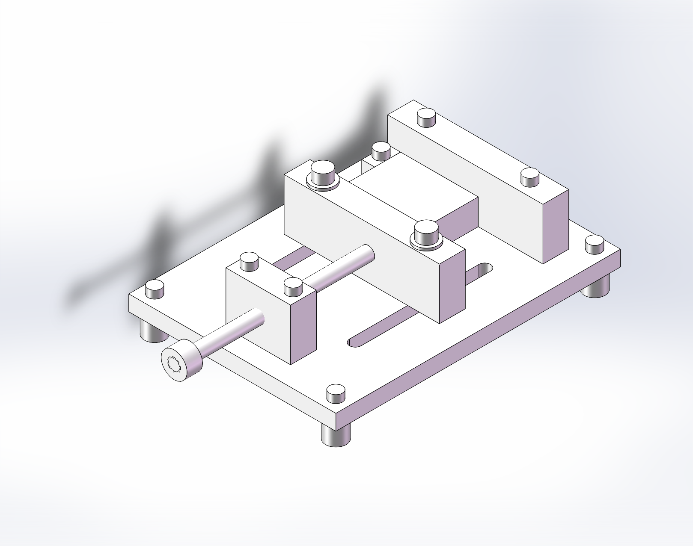
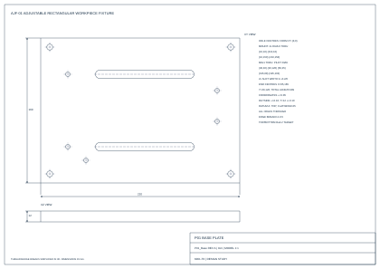
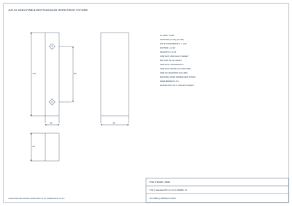
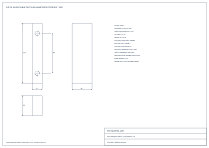
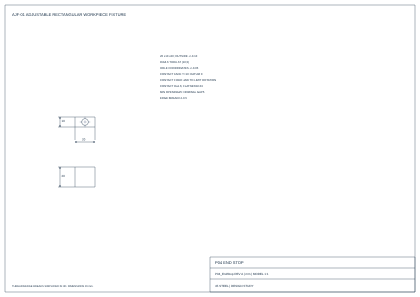
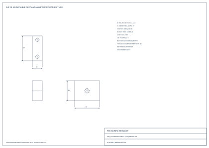
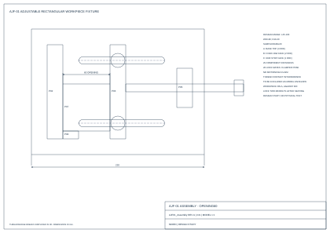
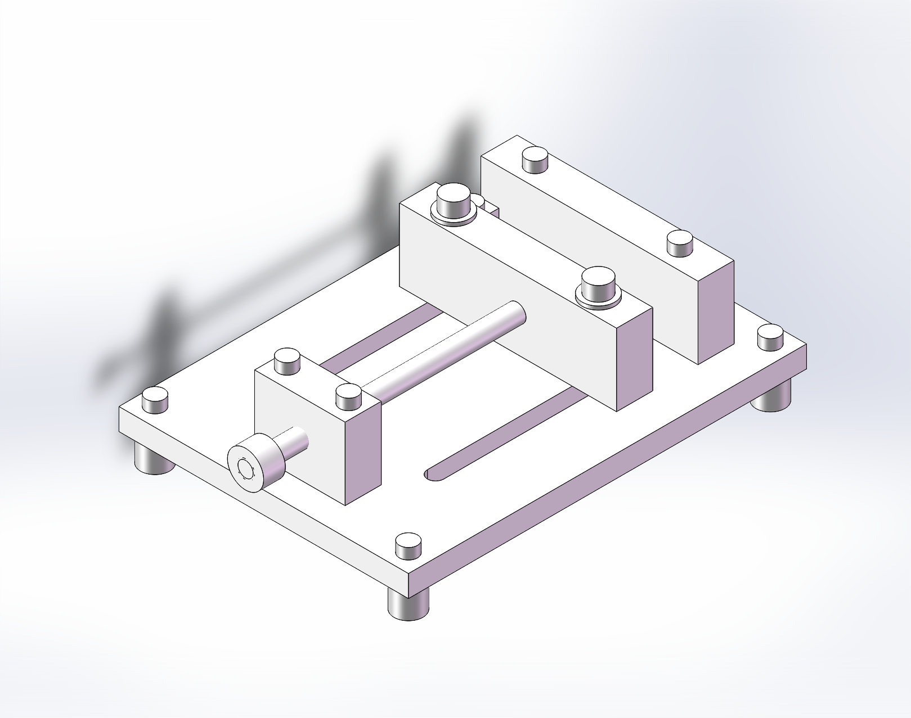
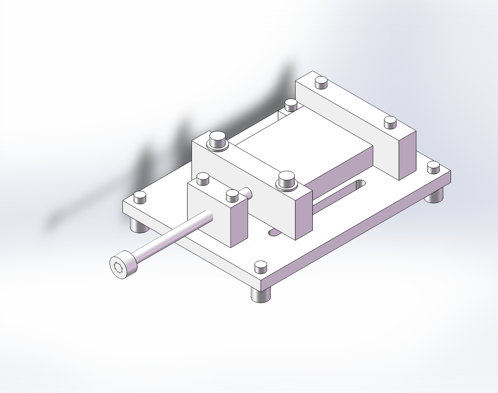

一个围绕定位基准、装配空间、锁紧连接和加工工艺展开的设计项目。
AJF-01 · v1.0.0 · 2026-10-12

A底板、B固定夹爪、C端挡块分配定位约束；丝杆靠紧，双M8锁紧。修订丝杆至150mm，并把最小开口调整到25mm，解决小开口覆盖与挡块间隙。
400N假设工况下的局部悬臂估算：应力12MPa，挠度约0.00311mm。计算没有包含连接柔度，不能替代整机精度或有限元结果。
M6连接在低摩擦情况下理论抗滑裕量仅1.0，已记录为首要实测与结构改进项。三种装配均执行实体检查，只有已分类螺纹包络重叠。
毫米制、模型空间1:1，图层与几何可编辑。图纸上的公差属于设计目标。







25×20×10mm最小工件

100×80×20mm最大工件
GitHub 仓库 · 完整版本下载 · 软件验证报告
完整设计报告 · BOM · 计算数据 · 简历与面试 · 实测计划